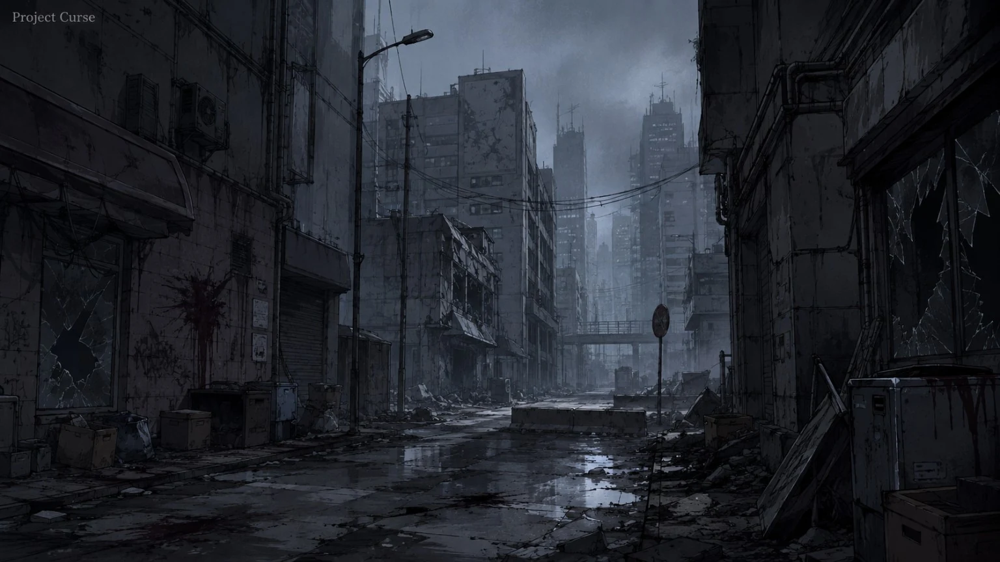
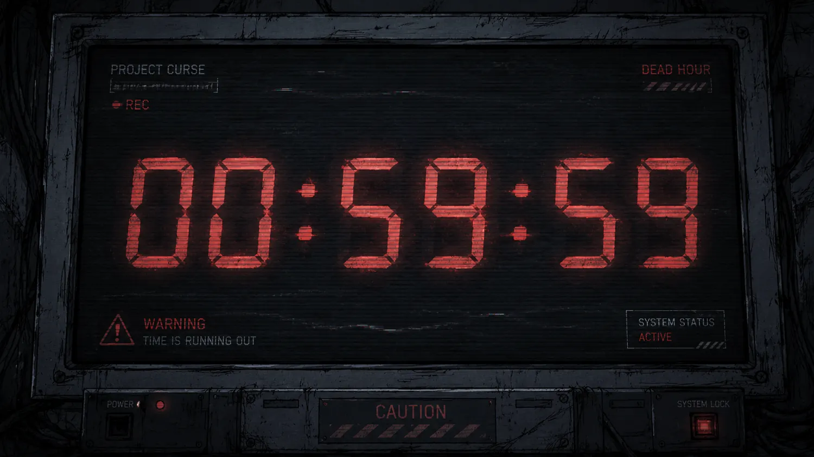
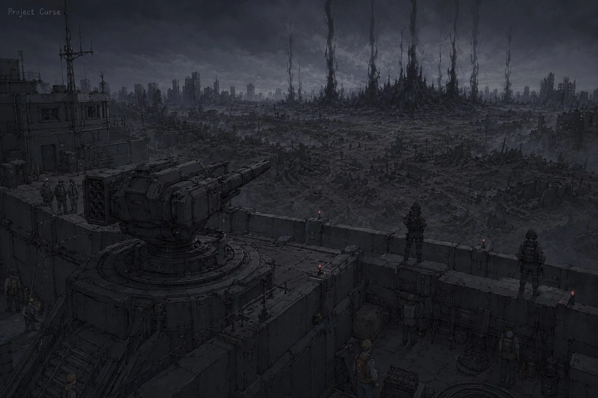
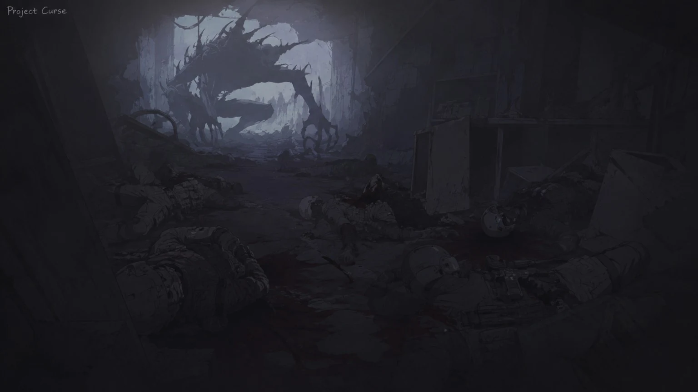
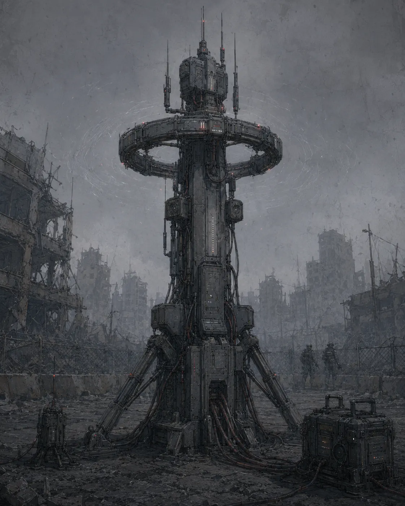
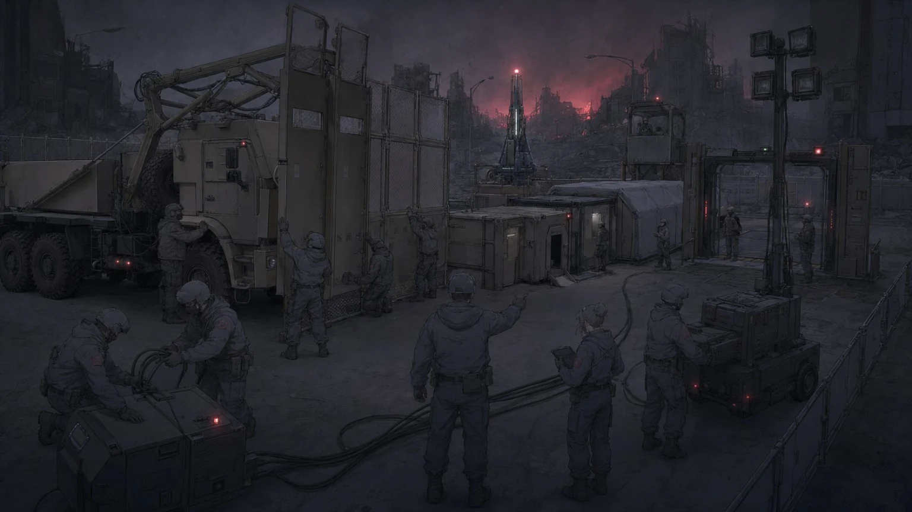
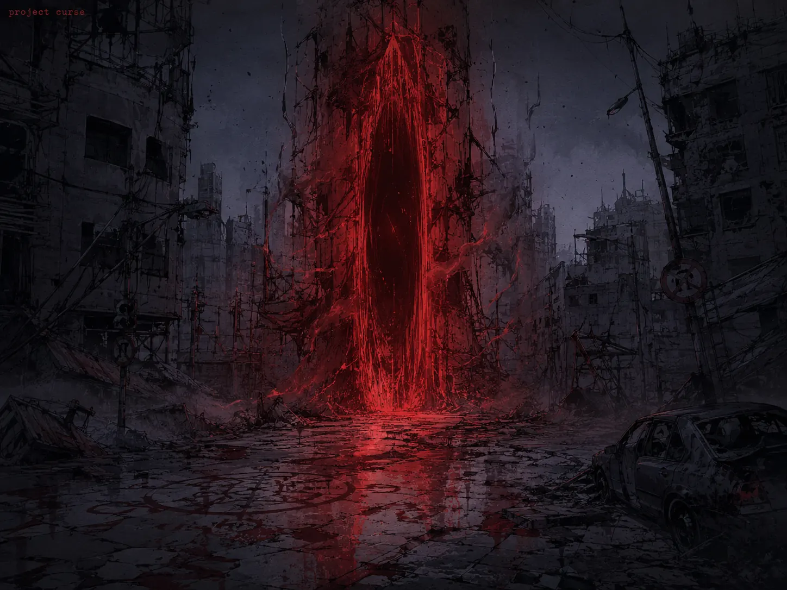
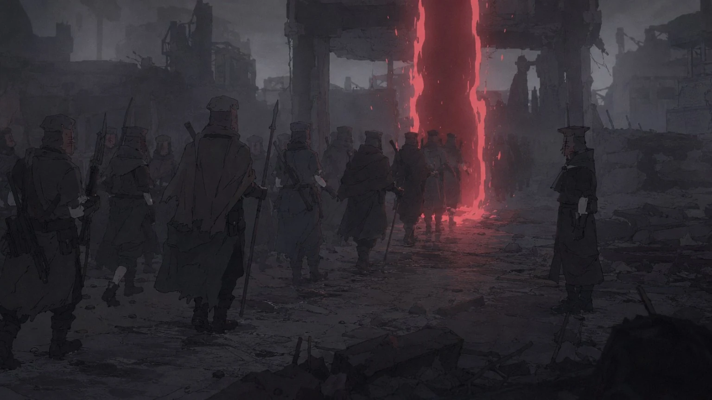
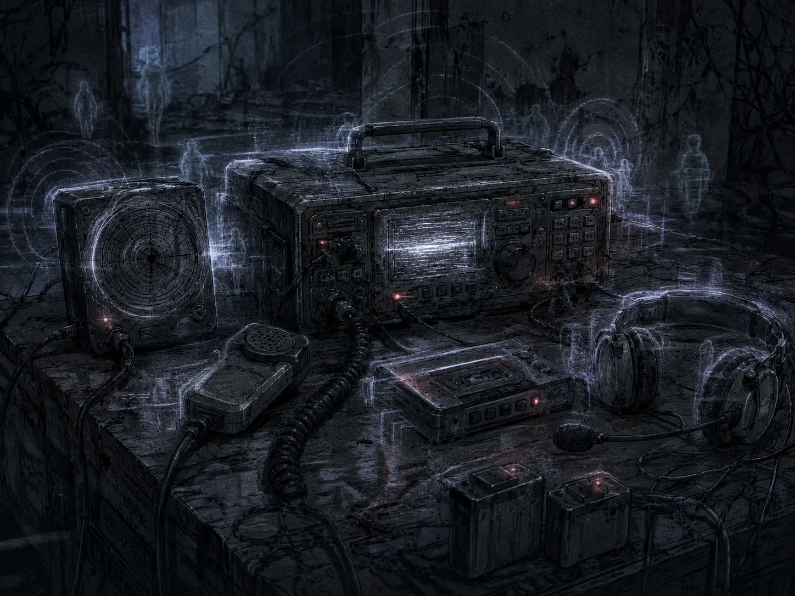
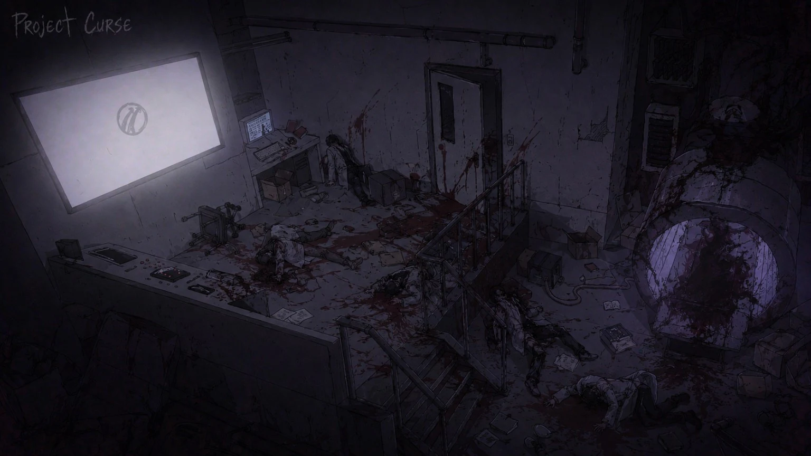

기록 열람
레드존 이상현상 및 오염 기준 문서
Redzone_881120
레드존 장기 방치 구역에서 회수된 오염 지수, 시간·공간 왜곡, 혈문, 오염 무전 기록을 바탕으로 블랙존화 징후를 분류한 내부 기준 문서.
기록면을 선택해서 열람하십시오.
오염 판정
이 기록면은 레드존의 오염 격상과 블랙존화 가능성을 판단하기 위한 기준을 다룬다. 개체 자체를 설명하지 않고, 개체 출현과 이상현상이 구역에 남기는 흔적을 기준으로 기록한다.
기준 개요

- 민간인 실종과 귀환자 이상 반응이 동시에 증가하면 옐로우존 재판정을 시작한다.
- 타락 개체 군집, 혈액성 잔류물, 통신 왜곡이 반복되면 레드존 격상을 검토한다.
- 여왕형 개체 신호, 지도 불일치, 기록 영상 변질이 함께 확인되면 블랙존 후보로 기록한다.

오염 지수
- 체액 반응: 검은 침전물, 혈액 응고, 부패 정지 반응.
- 장비 반응: 금속 부식, 렌즈 노이즈, 위치 기록 지연.
- 생체 반응: 체온 저하, 기억 누락, 동일 증언 반복.
- 공간 반응: 좌표 불일치, 반복 복도, 닫힌 문 재개방.

블랙존화 징후

- 여왕형 개체 신호와 오염 무전이 동시에 증가한다.
- 구조대 위치 기록이 지도에서 사라진다.
- 둥지화 건물이 행정 지도와 일치하지 않는다.
- 기록 영상의 시간 순서가 회수 시점마다 달라진다.
장기 방치 단계
장기 방치 구역은 초기 오염, 구조물 변질, 둥지화, 통신망 잠식, 블랙존화 전조 순서로 악화된다. 방치 단계가 진행된 구역은 회수보다 봉쇄 유지가 우선된다.
시간·공간 이상
레드존의 시간·공간 이상은 단순한 장비 오류로 처리하지 않는다. 동일 지점에서 반복될 경우 구역 격상, 구조 중단, 기록 회수 제한의 근거가 된다.
죽은 시간

- 특정 시간대에 무전, 시계, 생체 신호 기록이 동시에 정지한다.
- 정지 구간 이후 구조대가 다른 위치에서 발견되거나 기록 자체가 누락된다.
- 영상에는 같은 장면이 반복되지만 현장 시각은 정상적으로 흐른다.
- 죽은 시간이 3회 이상 반복되면 해당 진입로는 폐쇄한다.

C.A.P-17 시간 고정 장치

C.A.P-17은 시간 오차를 억제하기 위해 설치되는 고정 장치다. 장치 주변에서 체온 저하와 음성 지연이 발생할 수 있으며, 파손 시 주변 구역의 시간 오염이 빠르게 확산된다.

지도 좌표 불일치
- 지도상 같은 건물이 현장에서는 두 개 이상으로 분리된다.
- 구조대가 이동하지 않았는데 좌표가 계속 갱신된다.
- 기존 도로가 막혀 있거나 존재하지 않는 통로가 열린다.
변질 구조물
- 반복 복도, 재배열된 병동, 폐쇄된 대피소, 둥지화된 지하층은 공간 오염의 주요 지표다.
- 건물 내부가 둥지화될 경우 소각보다 외곽 봉쇄를 우선한다.
혈문·오염 무전
혈문과 오염 무전은 레드존 내부에서 가장 위험한 현상 기록으로 분류된다. 두 현상이 같은 구역에서 반복되면 여왕형 개체 신호, 우시노다교 의식 흔적, 블랙존화 후보지와 함께 대조한다.
혈문 유형

- 고정형 혈문: 같은 벽면, 바닥, 지하 통로에서 반복적으로 열린다.
- 일시형 혈문: 구조 요청 또는 대량 출혈 직후 짧게 발생한다.
- 잔류 혈문: 문은 닫혔으나 주변에 체온 저하와 혈액성 잔류물이 남는다.
- 유도형 혈문: 의식장 또는 둥지 중심부를 향해 반복 개방된다.

오염 무전

- 죽은 대원의 음성이 동일 좌표를 반복 송신한다.
- 미래 시점의 구조 요청이 현재 무전망에 수신된다.
- 동일한 여성 음성, 구조 요청, 금속성 잡음이 둥지 후보지에서 반복된다.
- 수신 후 귀환자 이상 반응이 발생하면 C.P.D 선별소로 이관한다.
처리 기준
- 혈문 주변 장비는 회수하지 않고 위치만 기록한다.
- 오염 무전 원본은 복사하지 않고 U.A.C 분석실에 이관한다.
- 혈문과 오염 무전이 동시에 확인된 구역은 구조보다 봉쇄를 우선한다.